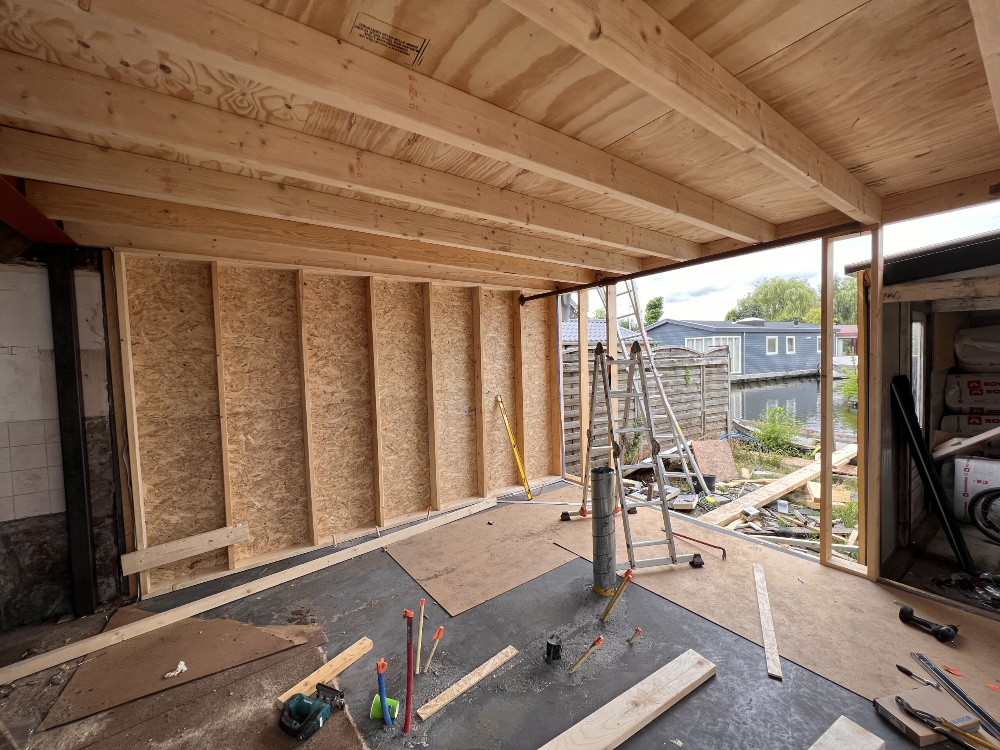

Kort antwoord: er lopen vijf klokken
Een betrouwbare einddatum ontstaat pas als je vijf fases apart plant: scope, ontwerp, vergunning, voorbereiding en uitvoering. De langzaamste fase bepaalt de start. “De bouw duurt een paar weken” zegt dus niets als kozijnen nog niet besteld zijn of de vergunningcheck niet is afgerond.
Vraag bij elke fase om drie gegevens: wie beslist, wat moet eerst klaar zijn en welke datum is bevestigd. Een streefdatum zonder eigenaar of voorwaarde is geen planning.

De 5 fases die je afzonderlijk vastlegt
- Scope en budget: leg buitenmaten, kozijnen, dak en casco-scope vast. Gebruik de calculator voor een casco-prijsindicatie als bandbreedte; de definitieve offerte volgt na een afspraak op locatie.
- Ontwerp en techniek: maak tekeningen en constructieve keuzes definitief. Elke late wijziging kan doorwerken in berekening, materiaal en prijs.
- Vergunning: doe vroeg de officiële Vergunningcheck van het Omgevingsloket. Is een aanvraag nodig, neem dan de termijn en eventuele informatieverzoeken uit jouw dossier over; gok niet met een standaarddoorlooptijd. Het stappenplan van de Rijksoverheid helpt bij de volgorde.
- Werkvoorbereiding: bevestig bouwslot, materiaal, bereikbaarheid, opslag, sloopwerk en wie de bouwplaats vrijmaakt.
- Casco-bouw en afbouw: houd casco-oplevering en gebruiksklaar apart. Vloer, stuc, schilderwerk en keuken vallen niet standaard binnen onze casco-prijsindicatie.
Bewaarbare terugplancheck
Begin bij de dag waarop je de ruimte wilt gebruiken en werk achteruit. Noteer per regel een datum, eigenaar en buffer:
- Ruimte gebruiksklaar: afbouw en installaties getest.
- Casco opgeleverd: restpunten en hersteltermijn vastgelegd.
- Uitvoering gestart: woning en bouwroute toegankelijk.
- Materiaal en bouwslot schriftelijk bevestigd.
- Vergunningcheck afgerond en alle vervolgacties gereed.
- Tekening, constructie en keuzes definitief.
- Scope en budget akkoord.
Zet geen keukenmonteur direct na een voorlopige casco-datum. Reserveer ruimte voor weer, herstelpunten en werkzaamheden die van elkaar afhankelijk zijn.
Waar loopt de planning meestal uit?
Veel vertraging ontstaat vóór de eerste bouwdag: maten veranderen, kozijnen worden laat gekozen, stukken voor een aanvraag zijn niet compleet of niemand regelt de toegang tot de achtertuin. Bevries daarom de afgesproken scope en laat iedere wijziging toetsen op prijs én einddatum. Lees ook hoe het plaatsingsproces loopt en wat er bij een casco aanbouw wel en niet wordt opgeleverd.
Veelgestelde vragen
Hoe lang van offerte tot start bouw?
Dat is projectspecifiek. Vraag om een startvenster nadat vergunning, ontwerp, materiaal en toegang zijn bevestigd. Een datum vóór die voorwaarden is voorlopig.
Is vergunningvrij bouwen altijd sneller?
Niet automatisch. Je bespaart mogelijk een aanvraagfase, maar ontwerp, constructie, bestelling en bouwvoorbereiding blijven nodig. Bewaar de uitkomst van de officiële adrescheck.
Wanneer bestel ik keuken en vloer?
Pas als maatvoering, aansluitpunten en casco-planning op elkaar zijn afgestemd. Leg vast wie na inmeting verantwoordelijk is voor wijzigingen.
Is de casco-opleverdatum ook de verhuisdatum?
Nee. Casco is wind- en waterdicht en geïsoleerd, maar de binnenafwerking volgt nog. Plan daarvoor een aparte fase met buffer.
Eerst scope en budget helder?
Stel je plan samen voor een casco-prijsindicatie. Op locatie maken we de scope concreet voor een definitieve offerte en planning.